| Take | Hero at 1024, then renders at 128 / 64 / 48 / 32 / 16 css px (2× retina sources), plus the 16px squint magnified | Rubric | Verdict |
|---|---|---|---|
| a · icon.svgEngine A — hand-authored layered SVG, built through build_icon.py — SHIPS | 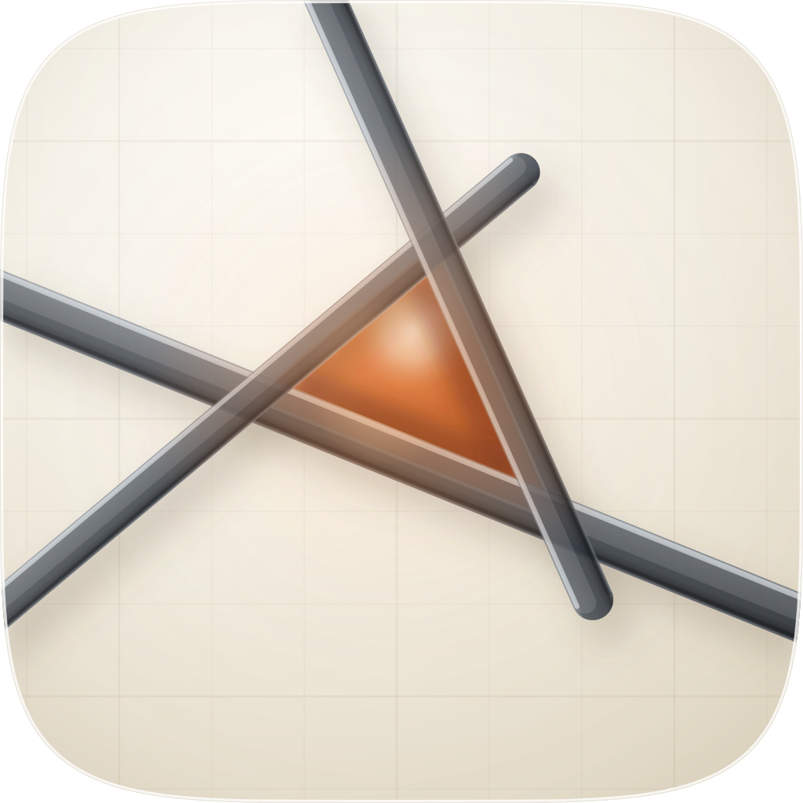 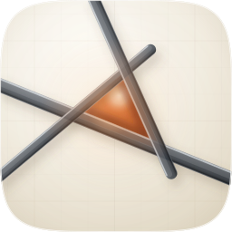 |
11 / 12 | Three translucent graphite battens on the family's porcelain, and the fix is the pocket of ember light they fail to close. Checks 1–4 all clean on the renders beside this cell: full-bleed on the set's exact superellipse, the three crossings enclosing a scalene triangle of 221 / 280 / 305 px whose centroid falls at (529, 494), just off the optical centre, a nameable filled-black silhouette, and at 16px it still reads as lines crossing with a warm centre. Figure-ground measured 7.49:1 (p2/p98 WCAG relative luminance); the ember pocket spans 283px, 27.6% of the tile, and the accent occupies 5.4% of it. Flattened to filled black the shape is nameable — three lines enclosing a triangular counter — and under a flat mono tint the triangle survives as a lighter patch bounded by three darker lines. Every crossing multiplies darker with plain source-over, so the darkening is authored translucency rather than a painted shadow. #10 is the one qualified pass and the liability is stated below. |
| a2 · icon-engineA2-chart.svgEngine A (second hand-authored take) — paper-chart register | 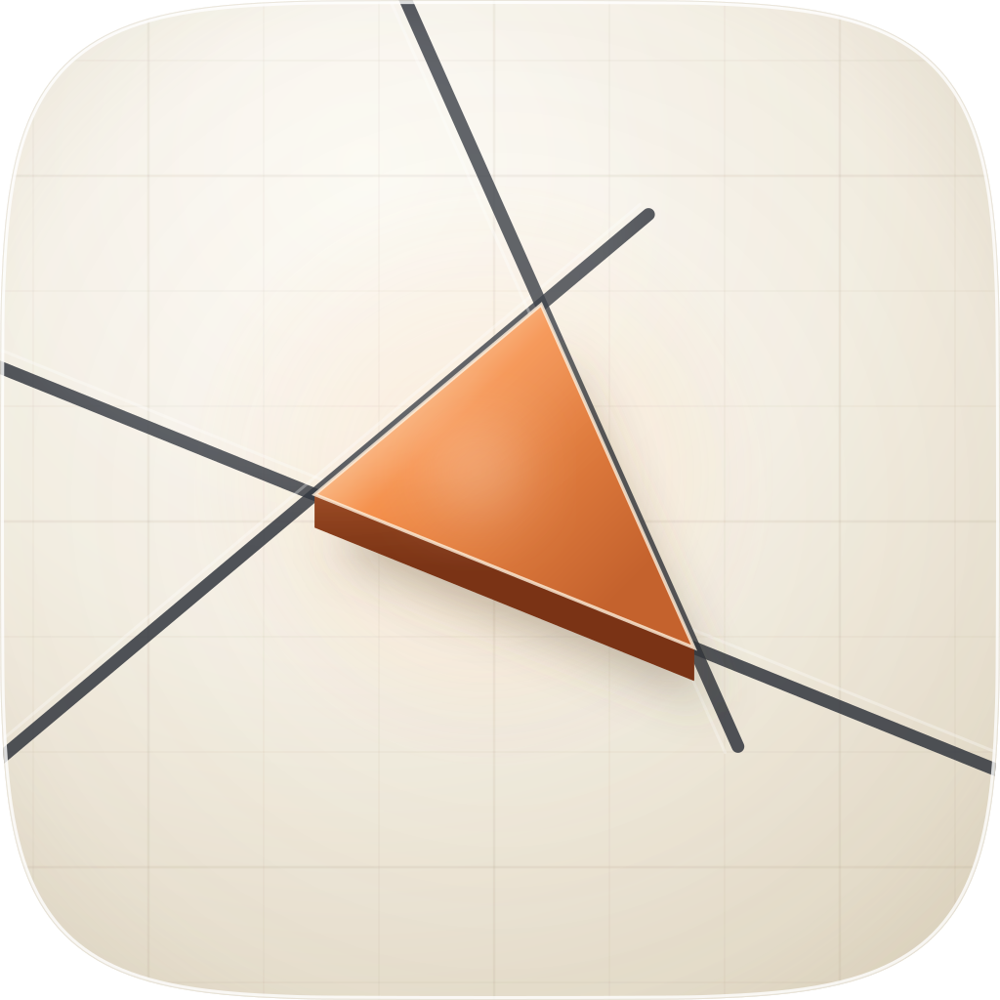 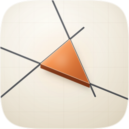 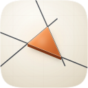 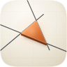 |
8 / 12 | Same geometry, opposite construction: the bearings ruled thin in ink and the cocked hat given real thickness as a prism standing on them. It loses on the concept before it loses on the rubric — a solid prism occludes the lines behind it, so the fix stops being a consequence of the three bearings and becomes an object placed on top of them, which is precisely what the brief rules out. Hard-fails #4: at 13px the ink lines are 0.2px at menu-bar size and the ×6 magnification beside this cell shows them gone, leaving an orange triangle with no reason to exist. Kept on the sheet because it is the clean statement of the failure mode, and its raised-prism side-wall shading is the only thing here worth salvaging. |
| b · icon-engineB-arrow.svgEngine B — Arrow 1.1 vector, briefed from the shared spec | 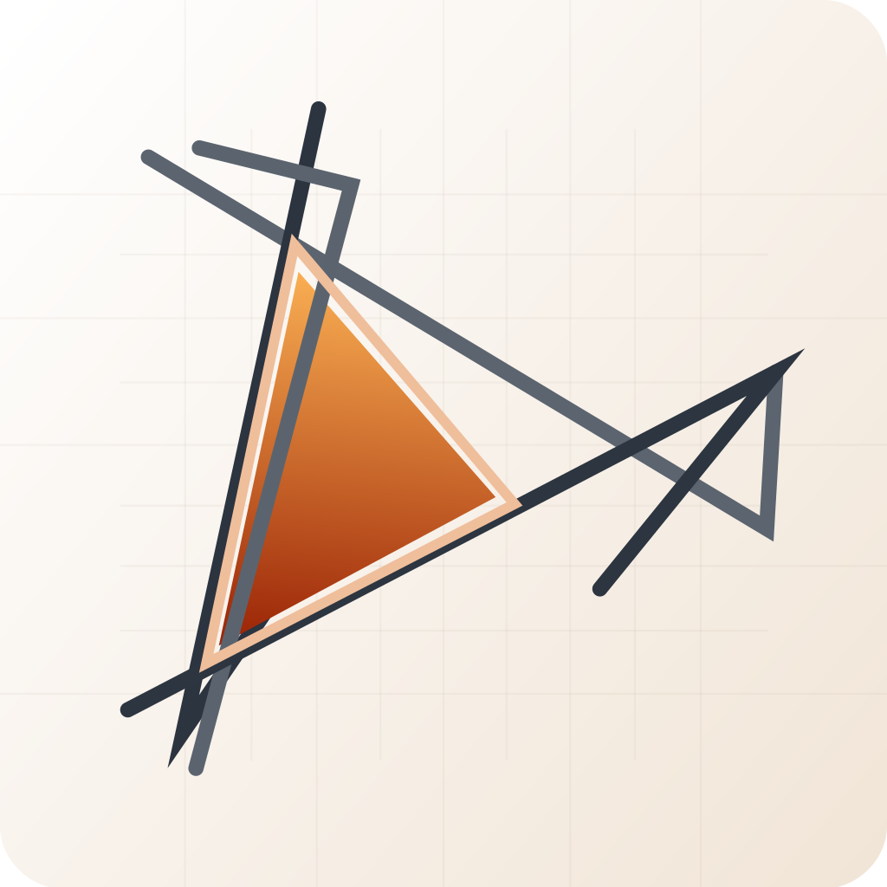 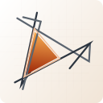 |
5 / 12 | Hard-fails #1: it baked its own rounded-rect corner mask, and not the family superellipse, so it ships a different outer shape from every sibling — visible in this row as a corner that does not match the ones above it. Fails #5 (no light model at all: flat strokes, no source, no shadow) and #8 (the triangle carries a white keyline that puts it in front of lines which also cross in front of it). It also introduced a second idea the spec never asked for — the arrowhead at the right — which is the anti-checklist's metaphor pile-up. Nothing was salvaged; the exclusions in the brief were the instructions it ignored. |
| c1 · icon-engineC-glass.pngEngine C — GPT Image 2, four corpus/family references — the material target | 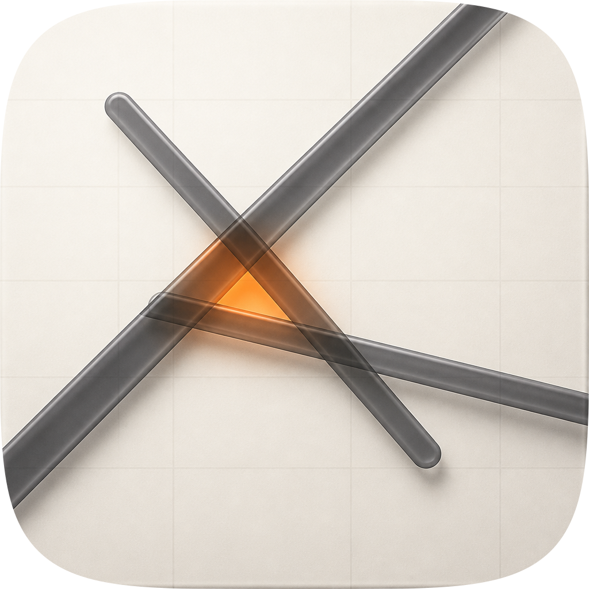 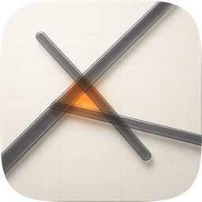 |
9 / 12 | The best material in the set and the reason the loop ran: genuine glass battens whose overlaps multiply, whose bodies transmit the fix's light, and whose contact shadows sit correctly under one key. It cannot ship. #1 fails on a baked corner mask that is not this family's shape — squircle-masking it, as this row does, leaves the raster's own frame visible as an inner seam. #10 fails by construction: a flat pre-masked raster carries its identity as a colour relationship with no layers to survive Dark/Clear/Tinted. #4 is weak: at 16px its third bearing is lost inside the other two and the pocket goes to a blob, where the master still holds a triangle. Its material is what the loop rebuilt into the master; its figure-ground was deliberately not copied. |
| c2 · icon-engineC2-smear.pngEngine C — GPT Image 2, second take from the same brief | 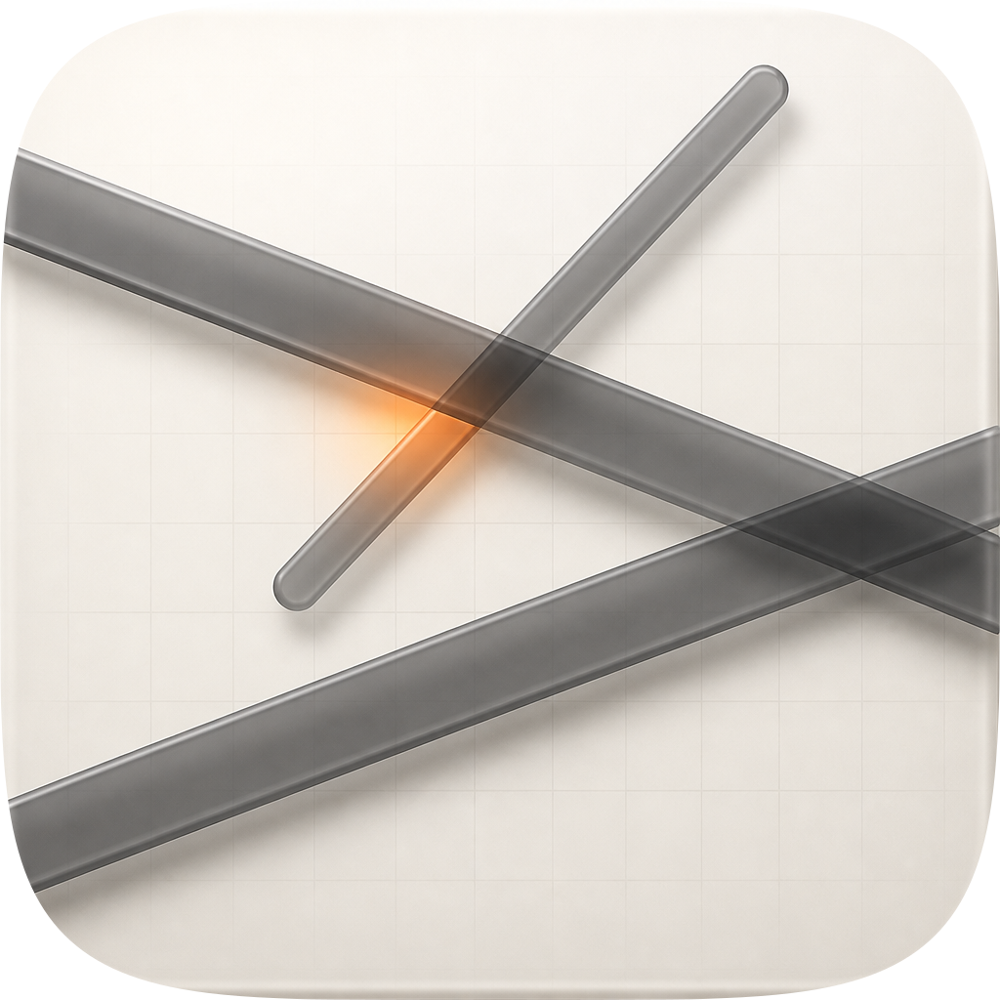 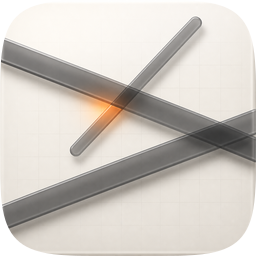 |
6 / 12 | Same engine, same brief, and it never built the subject: the three rods pass close enough to meet at a point, so there is no enclosed triangle anywhere and the ember survives only as a smear along one rod. That is the icon's entire idea missing, whatever the material does — and the material here is as good as c1's. Also fails #1 on the baked mask and #10 as a flat raster. It stays on the sheet because it is the honest measure of how much of this concept the raster engine got by luck rather than by instruction: one take in two. |
bg / mid / fg / highlight, plus chart and one per bearing — no <image> embed, 79 paths and 26KB against an envelope of 400 and 200KB, and the outer shape is the set's own squircle-path.txt rather than an approximation. Its material provenance is c1: two measured rounds rebuilt that raster's glass — transmission of the chart through the battens, frosted catches on both long edges, a broad interior band inside the lit edge — into parameters in build_icon.py. Known liabilities to revisit: (1) #10 is a qualified pass. The identity survives a mono tint as shape and value, but the fastest read at 16px is warm-against-cool, and Tinted removes exactly that; the triangle then depends on the three battens staying distinguishable from each other, which is the thing to check first if a tinted variant is ever needed. (2) The composition is deliberately unbalanced and the lower-left quadrant is close to empty — the knot sits up and right of the tile centre, which reads as direction at 1024 and as a slightly high centre of mass at 128. (3) The material was never measured. torch and lpips are not installed on this machine, so the fidelity gate ran on the numpy tier, which is blind at 256 and 1024 — the sizes where material lives. Every gate verdict below covers structure and small-size legibility only, and was taken with --allow-degraded-tier. (4) Both raster ends stop on the right. The two battens that terminate inside the tile do so at very different heights but on the same side, which is the one compositional choice here that was settled by eye rather than by measurement.Reference: loop-runs/reference.png, which is c1 masked to the family squircle so both sides carry the same outer shape. Baseline r00 is the pre-loop master. The reference's composition differs from the master's, so the composite can never approach 1 and is a weak signal here; it is reported because the direction of travel is still informative, not because the absolute number means anything.
| Round | Edit class | 1024 composite | 16px self-contrast | Gate |
|---|---|---|---|---|
| r00 | baseline | 0.5173 | 0.452 | — |
| r01 | material — glass battens | 0.5252 (+0.0079) | 0.390 (−13.7%) | REJECT |
| r02 | small-size repair — density restored | 0.5174 (+0.0001) | 0.438 (−3.1%) | ACCEPT |
r01 is the loop's own documented conflict, reproduced exactly: the reference's battens are lighter than the master's (the blind judge measured mean bar luminance at ~95 for the reference against ~65 and ~59 for the two takes), so converging on its material also converged its figure-ground and cost the master 13.7% of its own 16px contrast. The gate rejected it on the legibility floor while the composite rose at all five sizes. r02 kept the glass construction and put the density back, which held the composite gain and brought contrast within 3% of baseline. The rubric outranks the gate, and here it also outranked the reference.
Blind panel on r02 vs r00, both orders, judges claude (opus, high) and cursor (grok-4.6, xhigh): the verdict, its per-judge detail and the anonymised bundles are in loop-runs/r02/panel/. The claude judge is the same family as the author of the master and is recorded but excluded from the majority, per the panel protocol. Warden was not running on this machine, so the third family (gpt-5.6-sol) could not be asked and the decisive side of this panel is one family rather than two — a weaker panel than the protocol wants, and recorded as such rather than reported as a majority.
python3 audit_sheet.py render . (1024 / 256 / 128 / 96 / 64 / 32 sources); verified by its check subcommand.